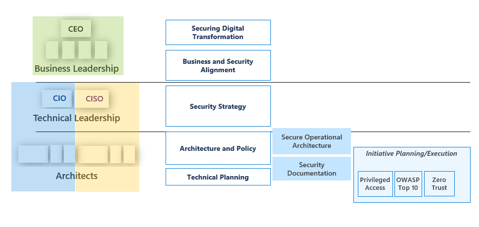
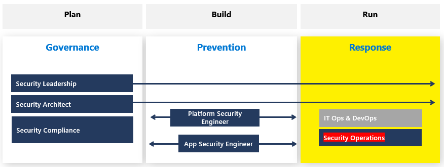

Security practitioners must consider implications for securing
operational architecture in addition to system-specific properties and constraints.
Design decisions will impact production operations such as deployment topology and
operational interfaces. Depending on business requirements for confidentiality,
integrity, and availability, continuous integration and continuous delivery (CI/CD)
may be required to facilitate the evolution of software securely throughout the life
cycle.
Enterprise security design guidance generally flows from
business leadership at the top of a large organization down to technical leadership
and eventually resides with software and security architects. The following diagram,
which is supported by NIST 800-160 vol. 1 and ISO/IEC 15288 guidance, depicts the
organizational stakeholders who play a vital role in orchestrating a secure
operational architecture.

Figure 17: Operational Security Guidance
Security Operations
Analyzing security roles to better understand security
operations is a worthwhile exercise. Based on business analysis, opportunities are
identified which could constitute developing a new software application. To
capitalize on opportunities, plans must be drafted that contain security governance
and compliance considerations. For simplicity, consider a linear process; the
application implementation occurs following planning activities. Implementation
includes cyber-resilient designs and security control considerations that together
form the basis for software security preventions. After the application is
implemented, it can be integrated into business operations. Once operational, the
response to threats in production will constitute security operations. Security
practitioners must consider the impact of design decisions made earlier in the
systems engineering process on security operations. See the orchestration diagram
below to better highlight security roles and dependencies for security operations.

Figure 18: Security Operations Roles within the development
life cycle
Continuous Integration and Continuous
Delivery
DevSecOps covers development, security, and operations
considerations. DevSecOps, when implemented, blurs the separation between building,
testing, and deploying source code updates via continuous integration/continuous
deployment (CI/CD) pipelines. The inclusion of CI/CD efforts has drastically
improved the security and quality of software while introducing new threat vectors
related to software pipeline workflows. Security practitioners must ensure software
pipelines include adequate assurances for developing cyber-resilient software while
maintaining the business-driven level of security for development operations.
Secure Operational Architecture (4.7)
Security practitioners must consider implications for securing operational architecture in addition to system-specific properties and constraints. Design decisions will impact production operations such as deployment topology and operational interfaces. Depending on business requirements for confidentiality, integrity, and availability, continuous integration and continuous delivery (CI/CD) may be required to facilitate the evolution of software securely throughout the life cycle.
Objectives
Overview
Enterprise security design guidance generally flows from business leadership at the top of a large organization down to technical leadership and eventually resides with software and security architects. The following diagram, which is supported by NIST 800-160 vol. 1 and ISO/IEC 15288 guidance, depicts the organizational stakeholders who play a vital role in orchestrating a secure operational architecture.
Figure 17: Operational Security Guidance
Security Operations
Analyzing security roles to better understand security operations is a worthwhile exercise. Based on business analysis, opportunities are identified which could constitute developing a new software application. To capitalize on opportunities, plans must be drafted that contain security governance and compliance considerations. For simplicity, consider a linear process; the application implementation occurs following planning activities. Implementation includes cyber-resilient designs and security control considerations that together form the basis for software security preventions. After the application is implemented, it can be integrated into business operations. Once operational, the response to threats in production will constitute security operations. Security practitioners must consider the impact of design decisions made earlier in the systems engineering process on security operations. See the orchestration diagram below to better highlight security roles and dependencies for security operations.
Figure 18: Security Operations Roles within the development life cycle
Continuous Integration and Continuous Delivery
DevSecOps covers development, security, and operations considerations. DevSecOps, when implemented, blurs the separation between building, testing, and deploying source code updates via continuous integration/continuous deployment (CI/CD) pipelines. The inclusion of CI/CD efforts has drastically improved the security and quality of software while introducing new threat vectors related to software pipeline workflows. Security practitioners must ensure software pipelines include adequate assurances for developing cyber-resilient software while maintaining the business-driven level of security for development operations.